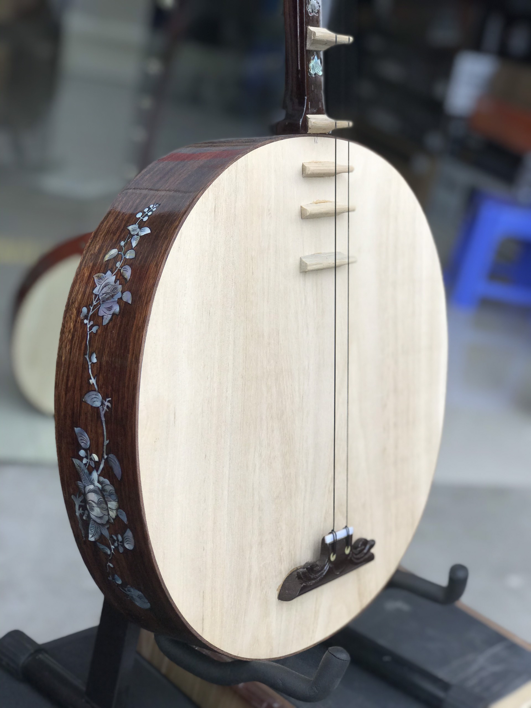

Main Parts of the Dan Nguyet
The circular resonator and tall frets allow performers to bend pitches smoothly, capturing the vocal inflection of Vietnamese music.


The circular resonator and tall frets allow performers to bend pitches smoothly, capturing the vocal inflection of Vietnamese music.
